European classicsListen
Beauty and the Beast
Age: 6+ · Read time: 48 min read
Characters: Beauty, Beast +1
A warm catalog for reading aloud
Discover gentle, magical, and wise tales for family reading, from Indian stories and American folklore to beloved classics from around the world.
Podcast
В гостях у Каму: сказки для детей
Audio fairy tales from Fairy Tales by Kamu for calm family listening.
Age: 6+ · Read time: 48 min read
Characters: Beauty, Beast +1
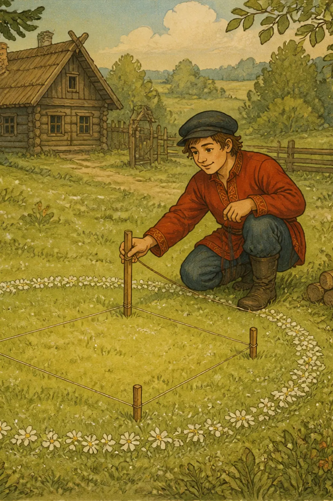
Age: 3+ · Read time: 4 min read
Characters: The Fairies' Dancing-Place
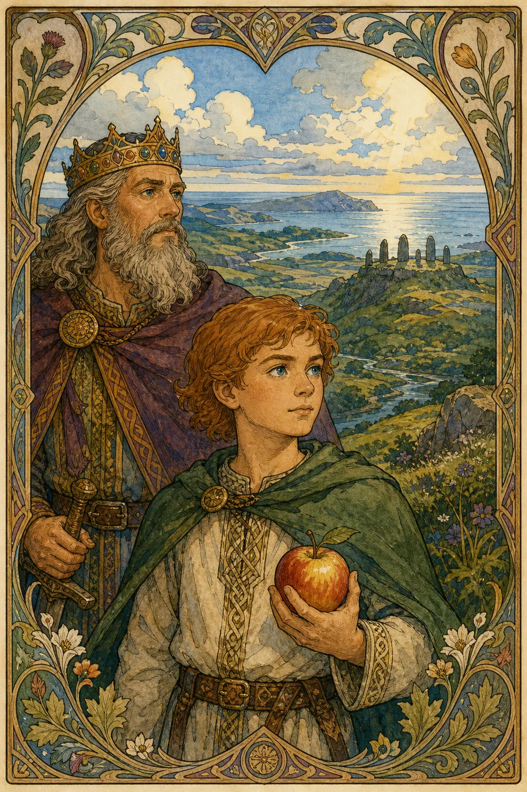
Age: 4+ · Read time: 6 min read
Characters: Connla and the Fairy Maiden
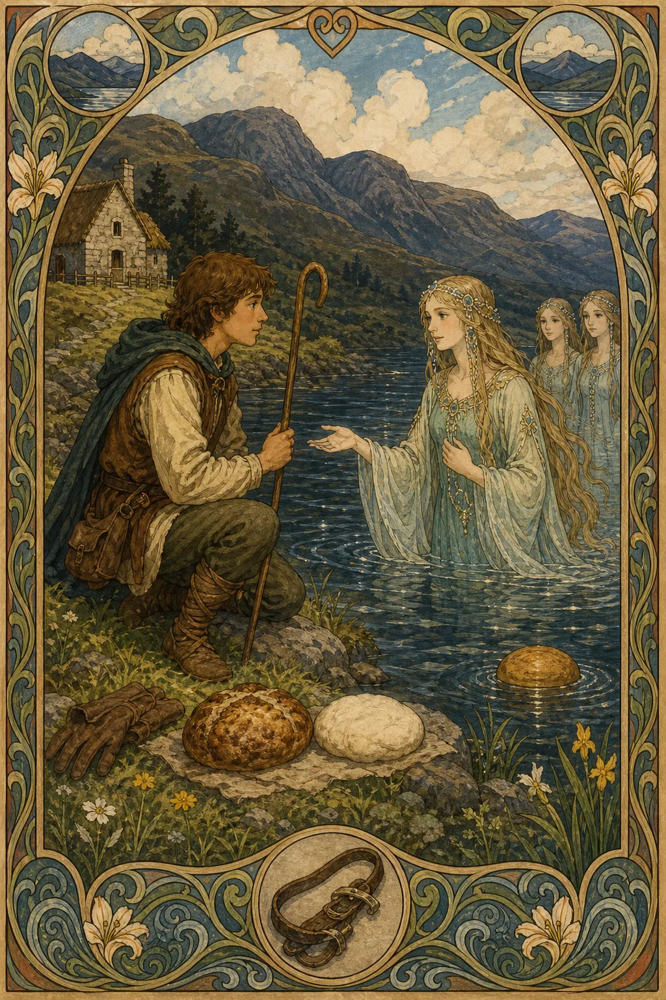
Age: 4+ · Read time: 5 min read
Characters: The Shepherd of Myddvai
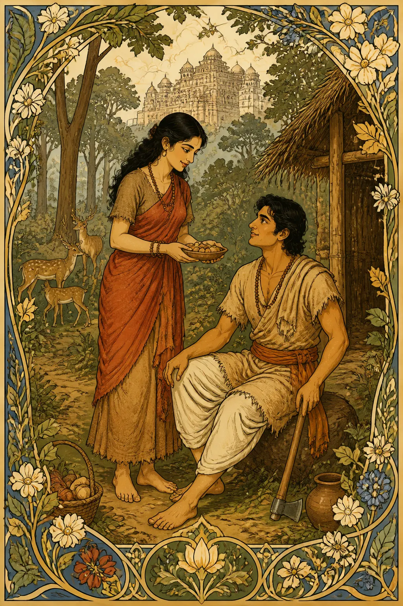
Age: 8+ · Popularity: High · Read time: 26 min read
Characters: Savitri, Satyavan
Age: 6+ · Popularity: High · Read time: 6 min read
Characters: Brahmin, tiger +1
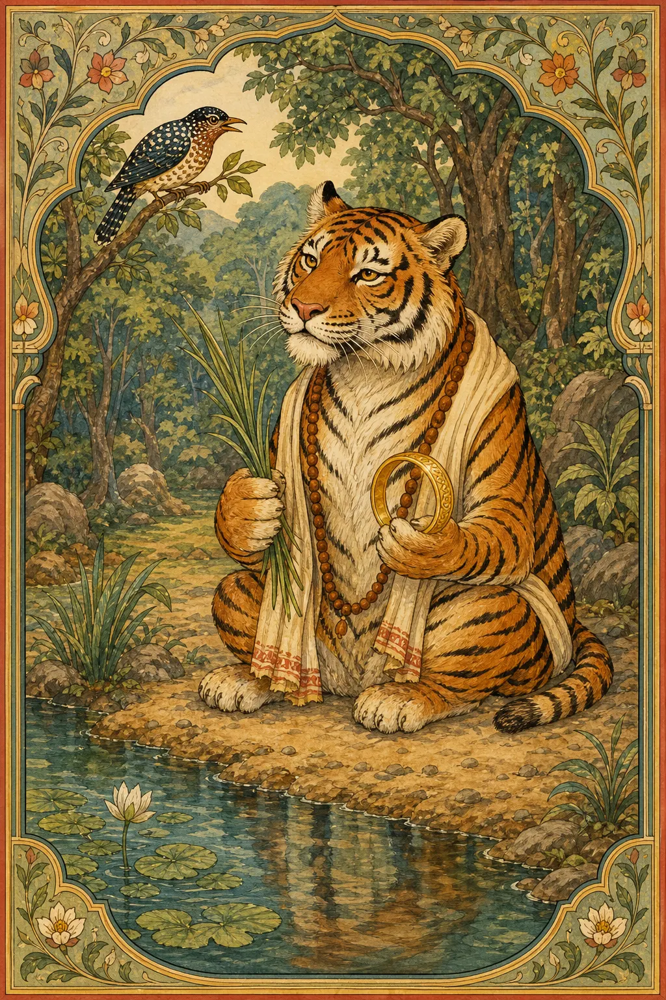
Age: 7+ · Popularity: High · Read time: 3 min read
Characters: Tiger, traveller
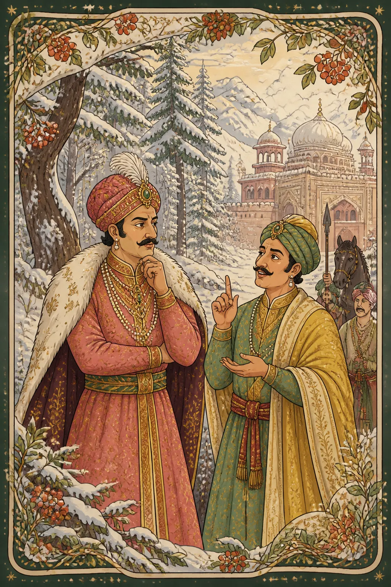
Age: 6+ · Popularity: Very High · Read time: 35 min read
Characters: Emperor Akbar, Advisor Birbal
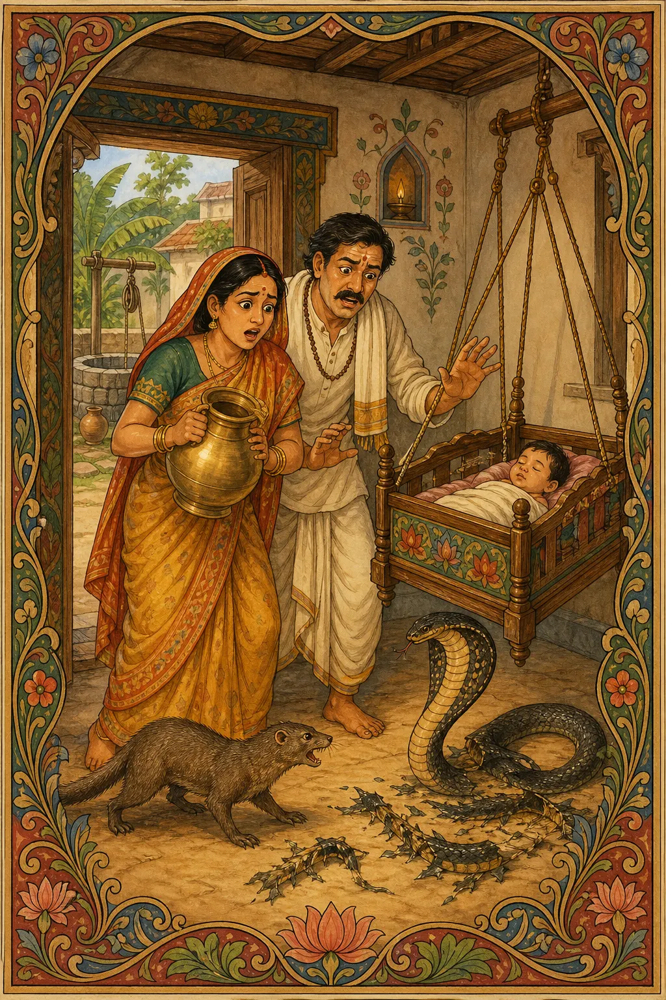
Age: 5+ · Popularity: High · Read time: 4 min read
Characters: Cobra, mongoose
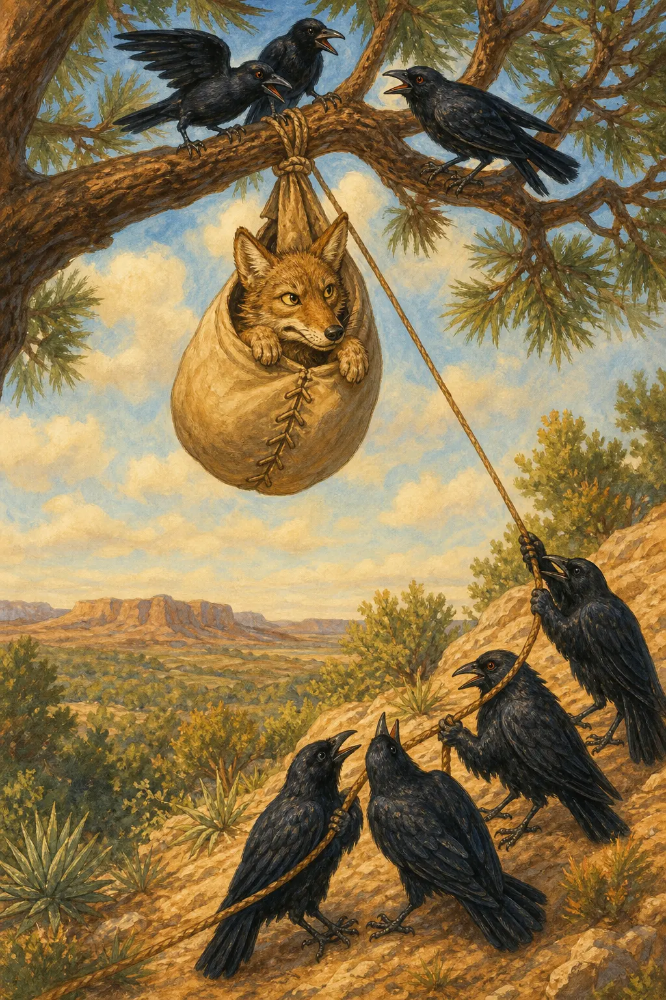
Age: 7+ · Popularity: High · Read time: 5 min read
Characters: Coyote
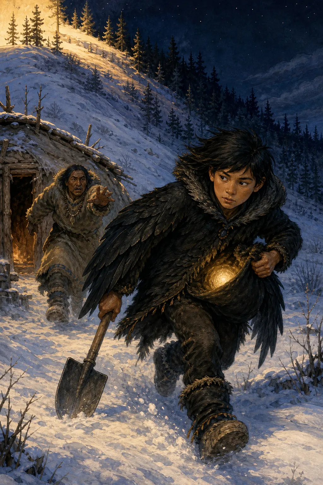
Age: 7+ · Popularity: High · Read time: 14 min read
Characters: Raven

Age: 6+ · Popularity: Very High · Read time: 5 min read
Characters: Br’er Rabbit, Br’er Fox +1

Age: 6+ · Popularity: High · Read time: 5 min read
Characters: Anansi / Aunt Nancy

Age: 6+ · Popularity: Medium · Read time: 7 min read
Characters: Compair Lapin, Bouki

Age: 8+ · Popularity: Medium · Read time: 6 min read
Characters: Boo Hag
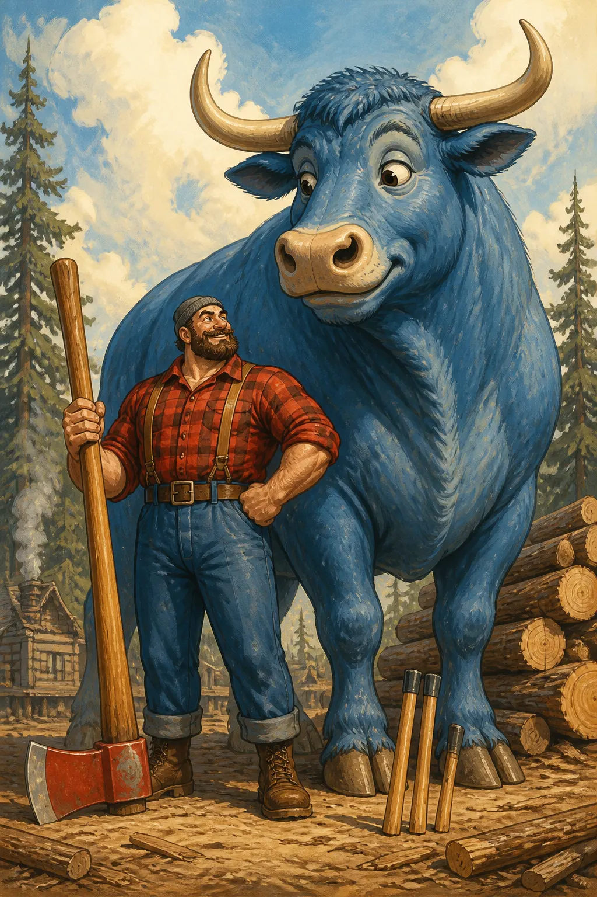
Age: 5+ · Popularity: Very High · Read time: 3 min read
Characters: Paul Bunyan, Babe the Blue Ox
Age: 7+ · Popularity: Very High · Read time: 10 min read
Characters: John Henry
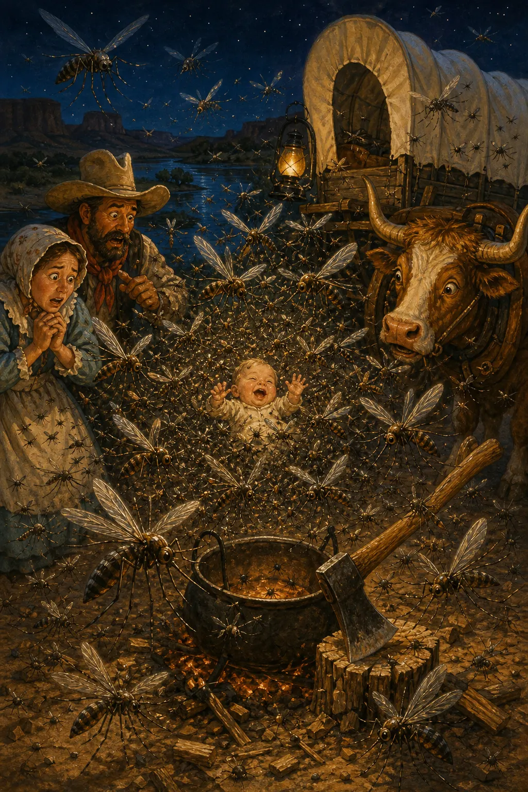
Age: 7+ · Popularity: High · Read time: 22 min read
Characters: Pecos Bill, Slue-Foot Sue
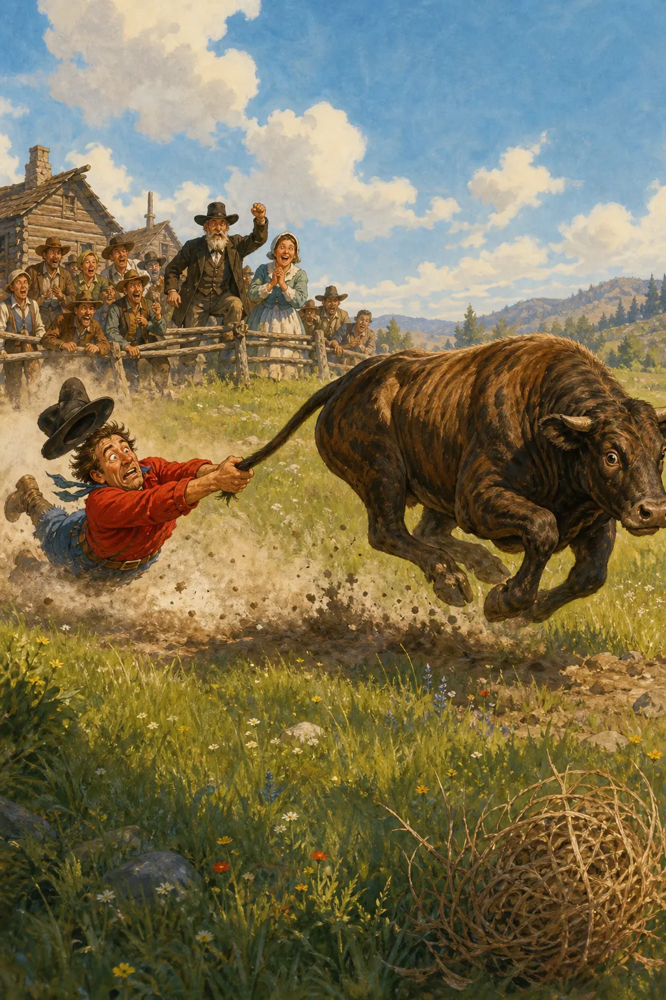
Age: 8+ · Popularity: Medium · Read time: 13 min read
Characters: Mike Fink
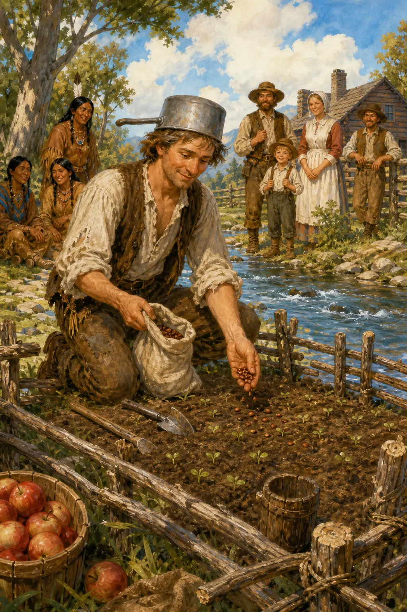
Age: 5+ · Popularity: High · Read time: 4 min read
Characters: Johnny Appleseed
No fairy tales in this section yet.